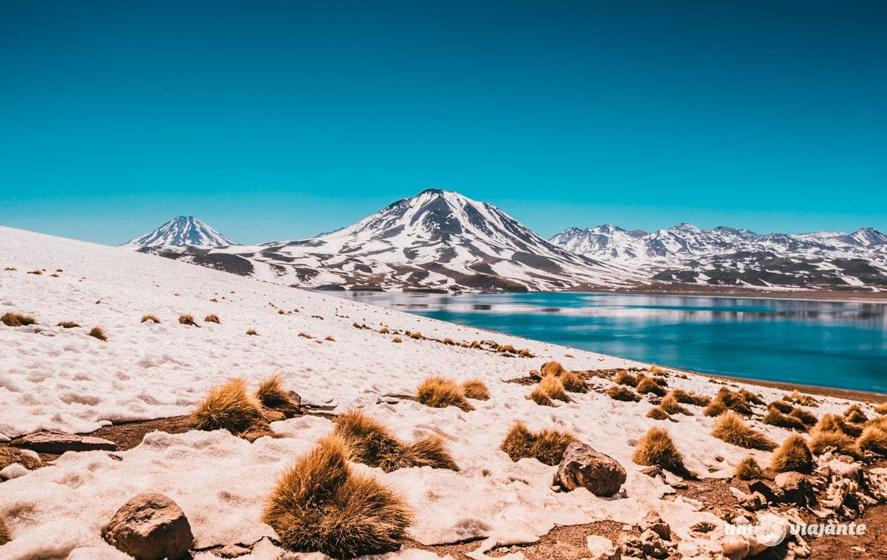

Destinos Visitados
Paris, França:
Paris é uma cidade vibrante, cheia de história e cultura. Durante minha visita, tive o privilégio de conhecer a icônica Torre Eiffel, explorar o vasto Museu do Louvre e caminhar pelas ruas encantadoras de Montmartre. O que mais me impressionou foi a atmosfera única da cidade, onde cada esquina oferece uma nova surpresa, seja um café charmoso ou uma vista deslumbrante do Sena. Paris realmente é uma cidade que cativa e encanta, uma verdadeira joia para quem ama arte, história e gastronomia.

Deserto de Atacama, Chile:
O Deserto de Atacama é um dos lugares mais impressionantes que já visitei. Conhecido por ser o deserto mais seco do mundo, ele oferece paisagens que parecem de outro planeta: vastas dunas de areia, lagos salgados, e o céu mais estrelado que já vi. Uma das experiências mais marcantes foi a visita ao Vale da Lua, com suas formações rochosas surreais. A sensação de estar em um lugar tão remoto e imaculado é algo que vai ficar gravado na minha memória para sempre.

Quioto, Japão:
Quioto, no Japão, é o lugar perfeito para quem busca um mergulho na tradição e na cultura japonesa. Durante minha visita, explorei templos como o Kinkaku-ji (Pavilhão Dourado) e o Fushimi Inari, com seus famosos portais vermelhos. O charme de Quioto não está apenas em seus monumentos históricos, mas também em seus jardins tranquilos, ruelas antigas e a incrível hospitalidade do povo japonês. É uma cidade que transmite paz e serenidade a cada passo.